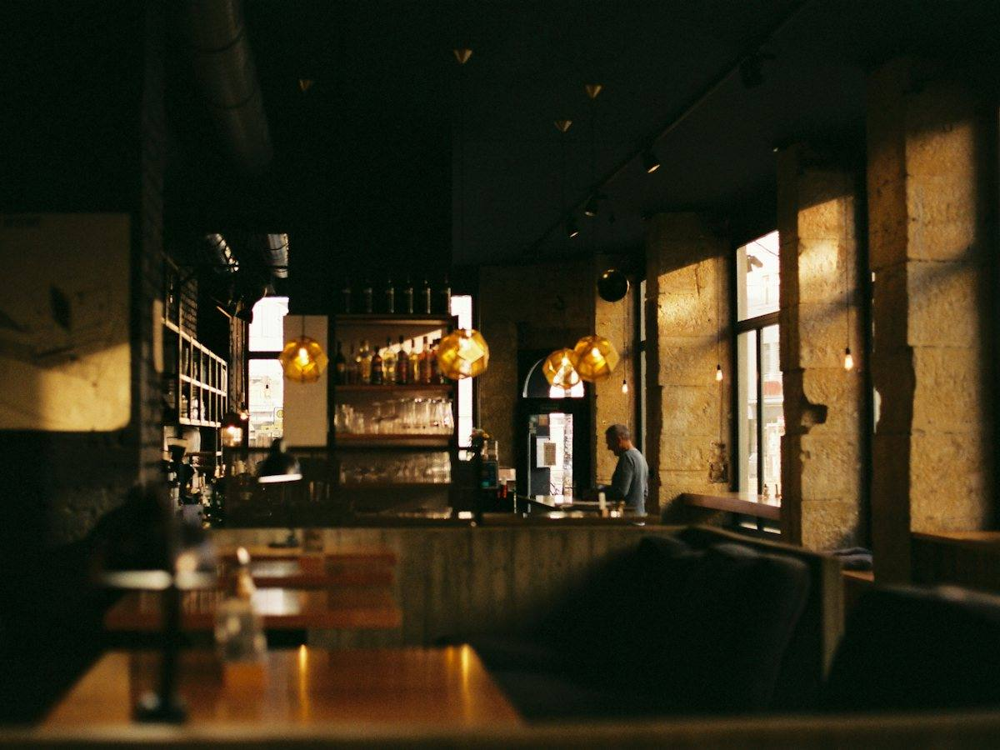

참고 이미지 · 천돈가 매장 아님제주 재래 흑돼지에서
나온 품종, 난축맛돈
난축맛돈은 농촌진흥청 난지축산연구소가 제주 재래 흑돼지와 랜드레이스를 교배해 만든 흑돼지 품종입니다. 천돈가의 대표 메뉴가 이 고기이고, 자리에서 직원이 구워 드립니다.
품종 정보: 농촌진흥청 웹진(2020.11)


참고 이미지 · 천돈가 매장 아님난축맛돈은 농촌진흥청 난지축산연구소가 제주 재래 흑돼지와 랜드레이스를 교배해 만든 흑돼지 품종입니다. 천돈가의 대표 메뉴가 이 고기이고, 자리에서 직원이 구워 드립니다.
품종 정보: 농촌진흥청 웹진(2020.11)
대표 메뉴 · 시그니처 62,000원
리뷰에서 925명이 고른 말
네이버 예약 2~8명
 참고 이미지 · 천돈가 고기 아님
참고 이미지 · 천돈가 고기 아님부위마다 맛있게 먹는 법이 다릅니다. 한 부위씩, 순서대로 안내해 드립니다.
네이버 방문자 평점 4.81 · 리뷰 8,428
음식이 맛있어요2,580
고기 질이 좋아요1,775
친절해요1,370
직접 잘 구워줘요925
매장이 넓어요809
"이런 점이 좋았어요" 선택 수, 2026년 10월 23일 기준 · 리뷰 원문 보기
서귀포시 천제연로 280, 1층
중문보건소 건너편
예전 주소(일주서로 873)에서 지금 자리로 옮겼습니다. 지도에 옛 주소가 나오면 위 주소로 찾아 주세요.
Staff grill the meat at your table. Our signature is Nanchuk-matdon (난축맛돈), a black pork breed developed by Korea's Rural Development Administration from Jeju native black pigs.
店员会在餐桌旁为您烤肉。招牌是 Nanchuk-matdon（난축맛돈），韩国农村振兴厅以济州本地黑猪培育的黑猪品种。
자리 문의는 전화로
064-739-0775